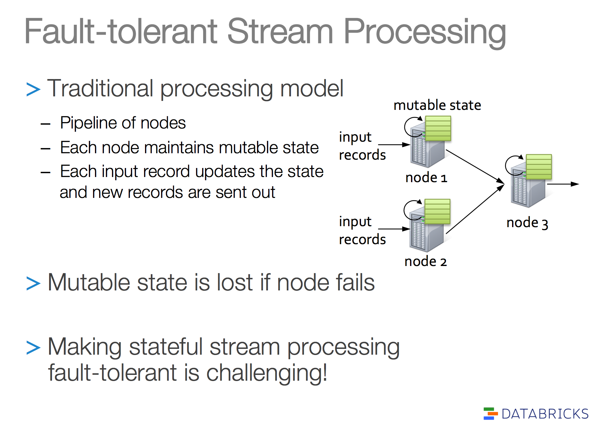
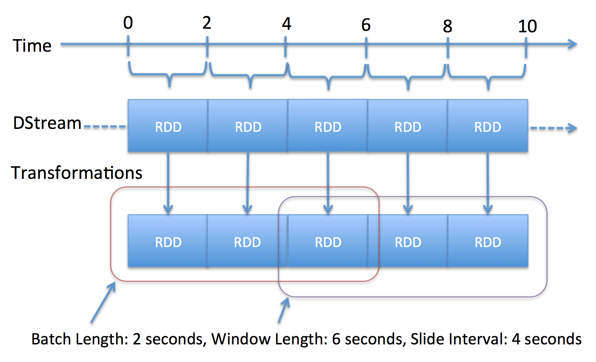
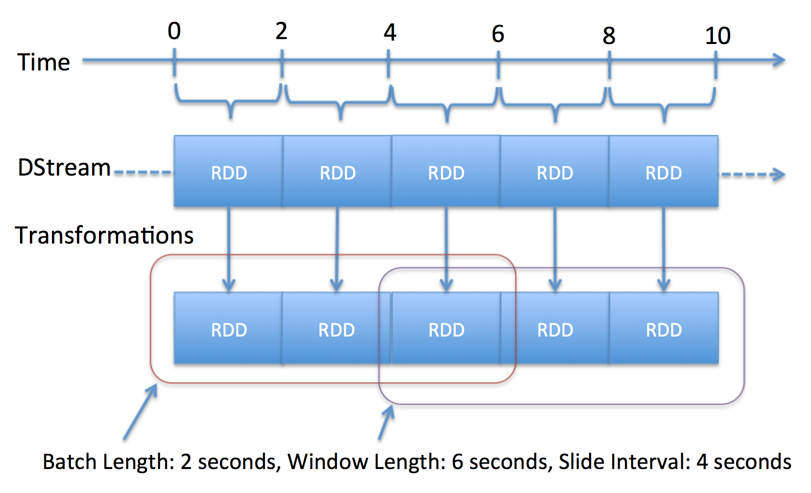
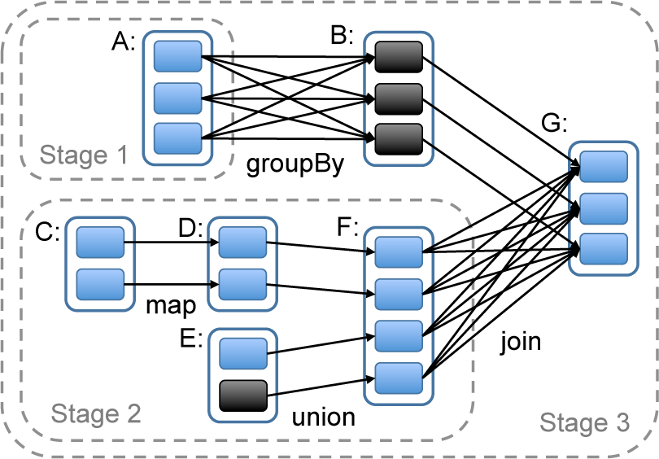
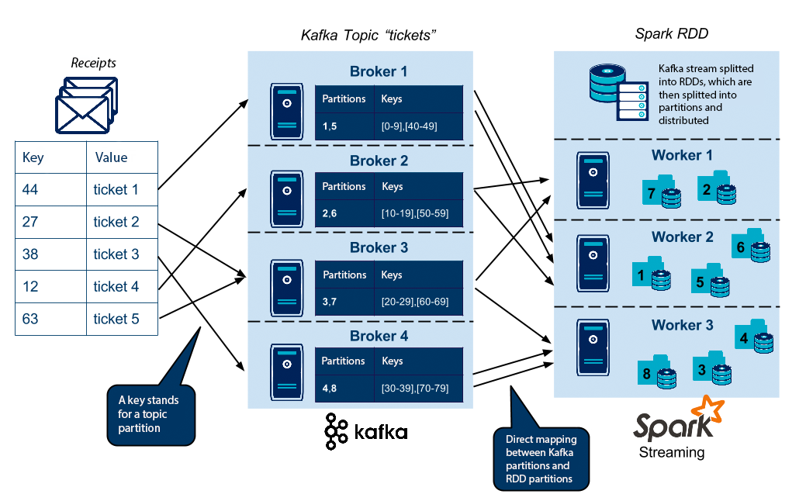

Suan Pan
A behind the scenes look at the the design and the technology
Our Story
We need to count number
Grid
Real time?
Real Time Counting Engine
- Receiving LWES events
- Parse events to key count pairs
- Aggregating counts
- Storing result
- Batch/Ad-hoc time range query
- High Available
- Fault Tolerant
- Soft Real Time
Abacus
Approach
- Event listeners receive LWES events and parses them into key/count pairs, cache and flush them to relay servers
- Relay servers call Couchbase to increment counts
- Query servers convert range query to Couchbase get operations
Issues
- Event listener boxes down
- Relay server boxes down
- Couchbase nodes down
- Couchbase is High Available
- But it's not Fault Tolerant
HA vs FT
- High Availablity
- System is continuously operational for a desirabaly long length of time
- Avoiding failure and downtime
- Fault Tolerance
- System can recover from failure
- HA system underneath
- Re-execute computation
- Reasonable design
Fault Tolerance Semantics
- At Most Once
- At Least Once
- Exactly Once
Example: Incremental counting problem
Exactly once is important
Exactly Once Counting System

Suanpan

Exactly Onece - Receiving Data
- Kafka
- High level consumer API
- Simple consumer API
- Spark Streaming
- Kafka high level API + WAL
- Kafka simple API + checkpoint
Exactly Onece - Processing Stream

Exactly Onece - Processing Stream

Exactly Onece - Updating Result
- Spark Streaming output operations have at least once semantics
- Idempotent updates
- Transactional updates
How Spark Streaming Works - Representation
 

http://spark.apache.org/docs/latest/streaming-programming-guide.html
https://dzone.com/refcardz/apache-spark
How Spark Streaming Works - Scheduling


http://subprotocol.com/system/spark-darling-of-big-data.html
https://dzone.com/refcardz/apache-spark
How Spark Streaming Works - Parallelism

From http://blog.octo.com/en/gather-shopping-receipts-architecture-overview/
Suanpan Clusters

Road Map
- HOX/OTE - PROD 1/20/16
- TargetCPM - PROD 1/20/16
- RTG - turned on in PROD 2/23/16
- NTR - QA
- RTRM- DEV
- Bidder Monitoring - design
- Retiring Abacus by end of Q1
Functional Programming
- No side effects
- First class function
- Lazy evaluation
Suanpan
- Exactly once / Idempotent / FT
- M/R
- Stream processing
Lessons learned
- Scala
- Full fledged functional programming language
- Expressive but concise syntax
- Static type checking which feels dynamic
- Seamless integration with Java
- OO?
- Option?
Lessons learned
val keyCounts =
stream
.flatMap {eventToKeyCounts(_)}
.reduceByKey {(x, y) => x + y, new SimplePartitioner(parN)}
.map { case ((partition, key), cnt) => (key, cnt) }
.updateStateByKey {updateCallback _, new SimplePartitioner(parN)}
keyCounts .foreachRDD { (rdd: RDD[(Key, Cnt)], time: Time) =>
rdd .foreachPartition { partition => pushToRiak(partition) }
}
Lessons learned
- Erlang
- OTP rocks!
- Transparent runtime
- Go to language and framework for backend development
- Service - Erlang/Elixir/OTP
- Web - Elixir/Phoenix
- JVM, RoR, ...
Lessons learned
- Spark Streaming
- Stream processing model
- Faut tolerance model
- API
- Active community
Lessons learned
- Riak
- AP system
- Backends
- Riak core
Special Thanks!!!
- Tech Council
- Core exchange team
- SRE
Compute Engine
|
Spark |
Storm |
Flink |
| Latency |
Seconds |
Sub-Second |
Sub-Second |
| Processing Model |
Mini-Batch |
Spout/Bolt |
Spout/Bolt |
| API Model |
M/R |
Spout/Bolt |
M/R |
| Version (by 6/2015) |
1.3.1 |
0.10.0 |
0.9.0 |
| Fault-tolerance Semantics |
exactly-once |
at-least-once |
exactly-once |